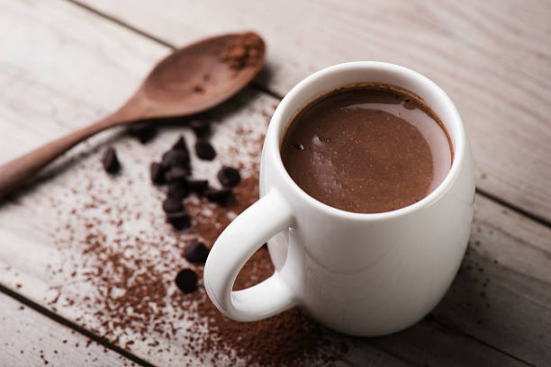

Rainy Day Hot Chocolate

Description
For those rainy days where all you want is something soothing
This recipe is inspired by the hot chocolate I had when I lived in Italy.
The texture is in between your typical hot chocolate and pudding
which makes it the perfect afternoon snack. Depending on how thick you make
it it can either be sipped like a typical drink or eaten with a spoon.
Ingredients
- 1/2 cup of milk
- 1/2 bar of your preferred chocolate broken into chunks
- 1 tsp of sugar
- 1 tsp corn starch or potato starch
Steps
- Place all ingredients into a small saucepan
- Turn the heat on to medium
- Stir constantly with a wooden spoon
- Once the mixture has thickened, turn off the heat
- If the mixture looks like cookies and cream, it's not ready yet
- The color should've changed slightly
- If you've ever made pudding from scratch, you're looking for that consistency
- Pour the mixture into a mug and let it sit for a few minutes (unless you want to burn your tongue)
- Enjoy the deliciousness
Notes
- I personally prefer 70% dark chocolate for this recipe. Milk chocolate also produces good results. I don't recommend using something darker than 70%
- If you're using darker chocolate, use a bit more sugar. If you're using milk chocolate you can omit the sugar
- For thicker results:
- Leave on the stove longer as opposed to taking it off heat right when it gets thick
- Add a bit more starch (i.e. 1 TBSP instead of 1 tsp
- For more drinkable results:
- Add more milk (i.e. 1 cup instead of 1/2 a cup)
- Omit the starch (will be a typical drink, no thickness)
- For additional flavor, consider including:
- Butterscotch chips
- Candy canes broken into small pieces